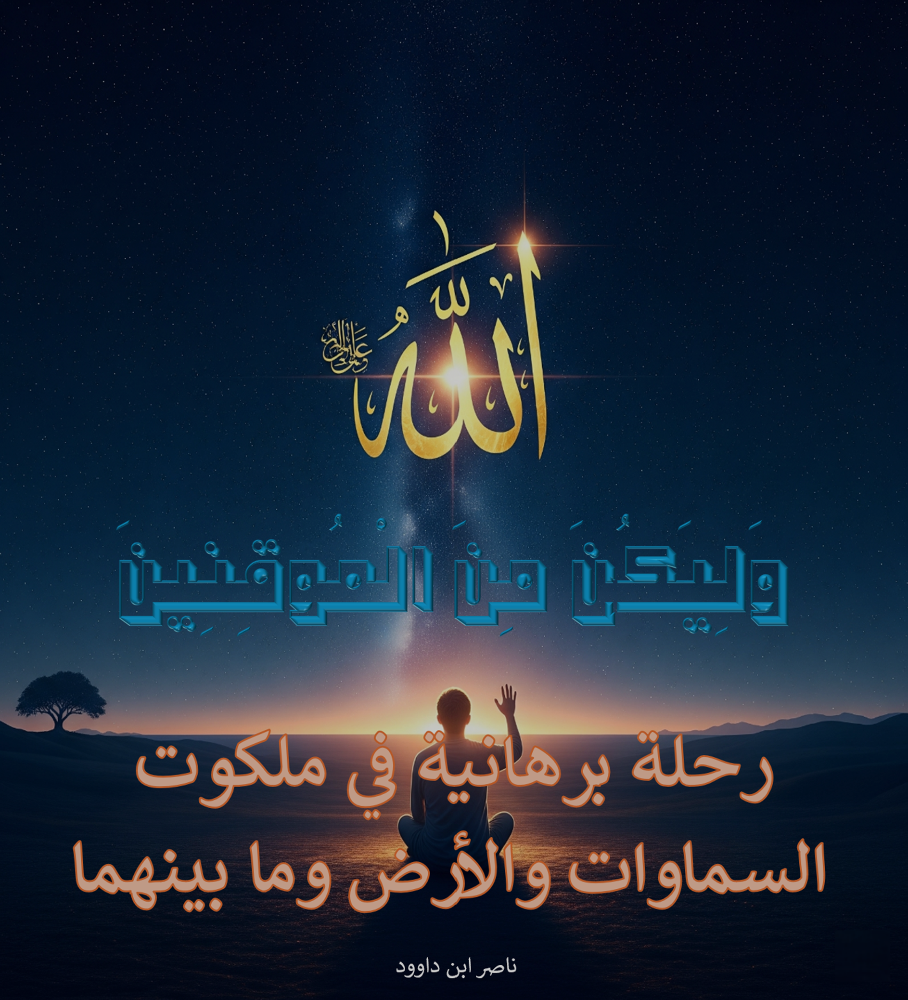

وصف الكتاب
يقدم هذا العمل الموسوعي رؤية متكاملة للكون من منظور قرآني، يجمع بين التحليل العلمي العميق والفهم الروحي الأصيل للآيات الكونية، مع نقد منهجي للنظريات الفلكية المعاصرة.
الكتاب ليس مجرد دراسة علمية، بل هو رحلة إيمانية تهدف إلى تحويل الإيمان إلى يقين عبر تأمل آيات الله في الآفاق والأنفس، مقدمًا دلالات جديدة للنصوص القرآنية في سياق الكونيات.
الرؤية المنهجية
يعتمد الكتاب على تحليل الآيات الكونية في القرآن الكريم، مع التركيز على مفاهيم مثل العرش، الكرسي، وثبات الأرض. يقدم نقدًا علميًا للنظريات الفلكية الحديثة، مثل كروية الأرض ودورانها، ويستعرض أدلة قرآنية وعلمية تدعم مركزية الأرض في النظام الكوني.
يجمع الكتاب بين التفسير القرآني والتحليل العلمي، مقدمًا منهجية متكاملة لفهم الكون من منظور إيماني يعزز اليقين بالله.
أبرز مميزات الكتاب:
- دراسة شاملة للكون كما ورد في القرآن الكريم
- نقد علمي منهجي للنظريات الفلكية السائدة
- تحليل معمق لآيات السماوات والأرض في القرآن
- رؤية متكاملة تجمع بين البعد المادي والروحي
- أدلة قرآنية وعلمية على ثبات الأرض ومركزيتها
المحاور الرئيسية:
- المنظور القرآني للكون: السماوات والأرض وما بينهما
- حقيقة الأرض: بين الأدلة القرآنية والنظريات العلمية
- نظام الشمس والقمر: دراسة تحليلية للآيات الكونية
- العرش والكرسي: البعد المادي والرمزي في القرآن
- نقد العلم الزائف: تحليل لخرافات علم الفلك الحديث
بعض عناوين مختارة من فهرس الكتاب
خاتمة: التدبر كمنهج حياة
في ختام هذا العمل الموسوعي، يدعو الكتاب إلى إعادة التفكير في فهمنا للكون من خلال القرآن الكريم، معززًا اليقين الإيماني بالأدلة العلمية والروحية. يهدف إلى تحرير العقل المسلم من النظريات العلمية الخاطئة، وإعادة بناء علاقة وثيقة مع النص القرآني كمصدر للهداية والفهم الكوني.
هذا الكتاب دعوة لكل قارئ لخوض رحلة تدبر عميقة في آيات الله، ليصبح من الموقنين الذين يرون الحقيقة في ملكوت السماوات والأرض.
لمن هذا الكتاب؟
- الباحثون في الدراسات القرآنية: المهتمون بالآيات الكونية
- علماء الفلك والفيزياء: الراغبون في نقد النظريات الحديثة
- المهتمون بالعلم والدين: الباحثون عن رؤية متكاملة للكون
- المعلمون والدعاة: الراغبون في تقديم الآيات الكونية بطريقة حديثة
- عموم القراء: الراغبون في تعميق إيمانهم ويقينهم